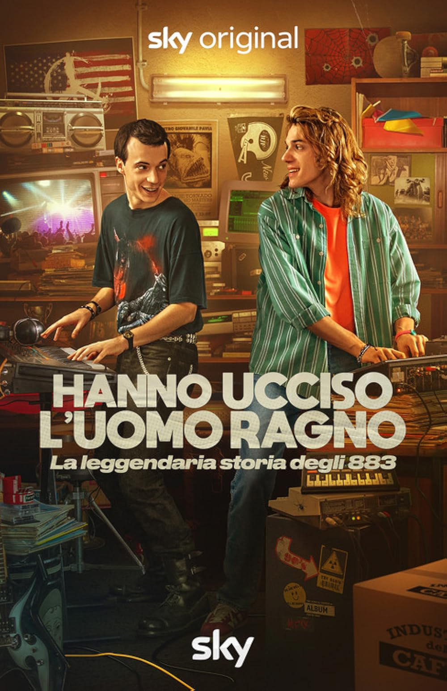

ED
Work
Kuni
About
Contact
← Back to filmography
TV Series · Sky Original · 2024
Hanno ucciso
l'Uomo Ragno
La leggendaria storia degli 883 —
Accidentally Famous

Hanno ucciso l'Uomo Ragno
Tracklist
← Back to filmography